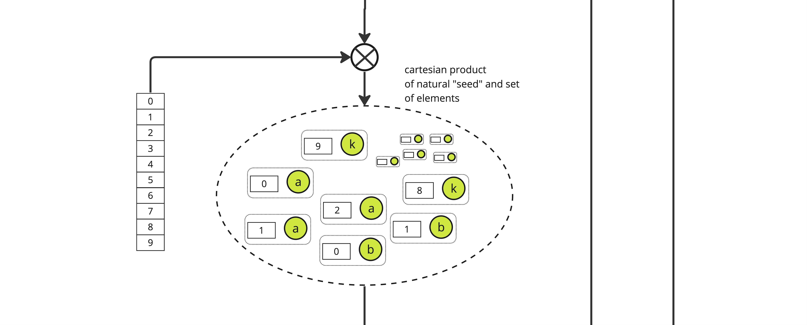
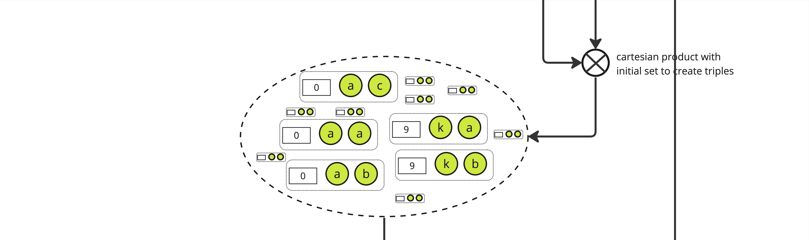
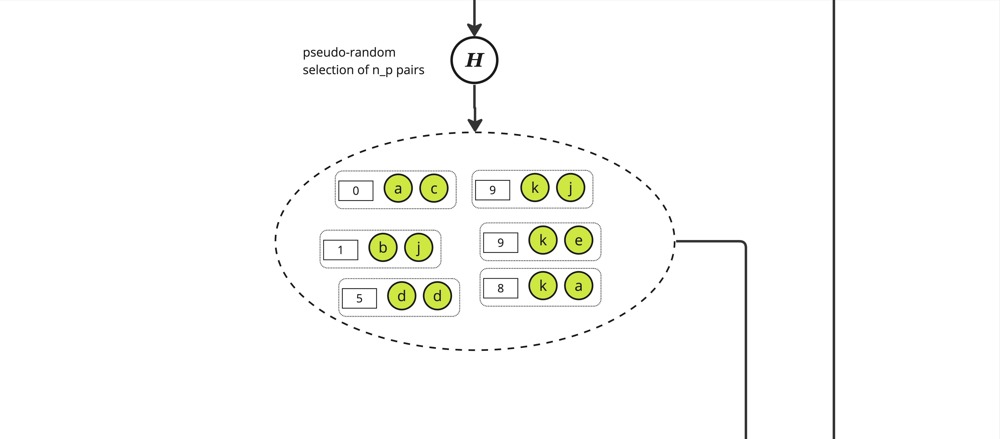
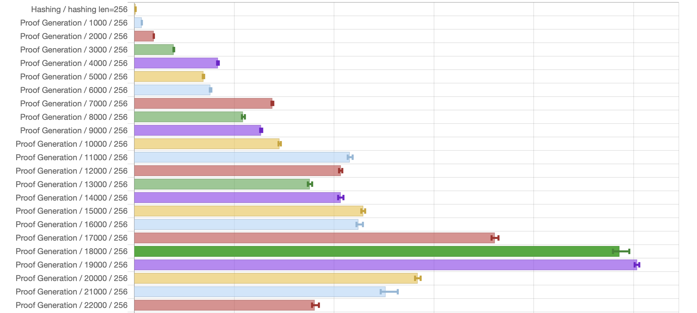
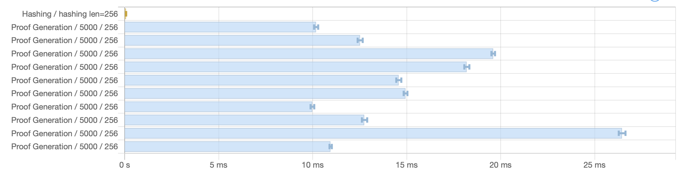

Introduction
Approximate Lower Bound Arguments are a form of cryptographic certificates that allow a prover to convince a verifier they know some large set of elements by providing only a small subset of those elements. This excellent X thread provides a good intuition on why ALBAs are useful and how they work, and details of the theory behind this construction are beyond the scope of this introduction and can be found in the paper.
Proving
Here is an alternative graphical representation of how ALBA certificates are produced, using the basic construction. We start with a set denote \(S_p\) of elements such that each is unique and its availability can be asserted by a verifier through some predicate (called \(R\)) in the paper.
Note: The \(S_p\) set can be smaller than the expected maximum number of elements we want to build a proof on, with a lower bound on \(n_p\) the number of expected honest elements.

The first step is to construct the cartesian product of each element of \(S_p\), here called \(a\) through \(k\), with all the integers lower than some parameter \(d\), yielding a set of size \(|S_p| \times d\)

From this set, we pseudo-randomly select \(n_p\) pairs using a "random oracle" \(\mathbb{H}\). \(\mathbb{H}\) is effectively just a hash function and to select the adequate number of pairs we pick those with a hash value modulo \(n_p\) equals to 0, yielding a set of size roughly \(n_p\) of pair of an integer and some item in \(S_p\).
Note: The ratio \(n_p / n_f\) is a key factor when setting the needed length of the proof.

We then expand the set again, creating triples of an integer and 2 elements from \(S_p\) through a cartesian product between the selected pairs and the initial set, yielding a set of size \(|S_p| \times n_p\).

And we again pseudo-randomly select \(n_p\) elements from this new set using the same function \(\mathbb{H}\), yielding a set of triples of approximate size \(n_p\)

This process is iterated \(n\) times according to the protocol parameters (see the paper or the code for details on how these parameters are computed), yielding a set of (roughly) \(n_p\) tuples of length \(n+1\) where each tuple is some "random" integer along with \(n\) items from \(S_p\).
The last stage consists in applying a function \(\mathbb{H}_1\) to select one element from this set which is the final proof.

Verifying
Verifying a given proof \(P\) is straightforward. Given the known share of honest items \(n_p\) and a security parameter \(\lambda\) (set at 128 in the paper) controlling the exponentially decaying probability a proof with dishonest items can be constructed, the verifier needs to check:
- The sequence of hashes from the items in the proof are all 0 modulo \(n_p\),
- The value of \(H_1\) for the whole sequence is 0 modulo some derived parameter \(q\),
- And of course that each item in the sequence is valid w.r.t. the predicate \(R\).
Benchmarks
Note: All these numbers were obtained on a single C2, 4 CPUs, 16GB Ram machine from Google Cloud running Ubuntu 22.04.
Simple benchmark
Shows proving time for various small number of items (HTML):

While the benchmark shows execution time is roughly linear as the number of items increases, there are locally wild variations: A smaller number of items could lead to a significantly larger execution time. This seems easily explainable by the fact the number of hashes executed depends on the "shape" of the tree of data one needs to traverse. Even with identical set of data, different number of items yields different values for parameters \(d\), \(u\) and \(q\) which necessarily modify the computed hashes and therefore the depth-first search for a proof.
Large benchmarks
Large benchmarks (in HTML and CSV): Run time for all list of items from 1000 to 100000 stepped by 1000. The following picture represents a fraction of that data:

Variance benchmark
Runs prover with different set of data for same number of items. Running ALBA prover on 10 different lists of 5000 items yields also varying running time, with a difference of a factor 2 between slowest and fastest. Again, this is explanable by the "random" nature of the data: Different lists can lead to different traversal of the tree when constructing the proof, some requiring more hashes than others.
Run time for 10 different list of 5000 items (in HTML and CSV):

Impact of actual vs. expected items set
This benchmark (in HTML and CSV) varies the size of prover input set with respect to the size of \(S_p\), for different number of items over varying honest ratio (\(n_p\))

Execution time can dramatically increase as the number of items provided to the prover gets closer to the minimum expected number of honest items.